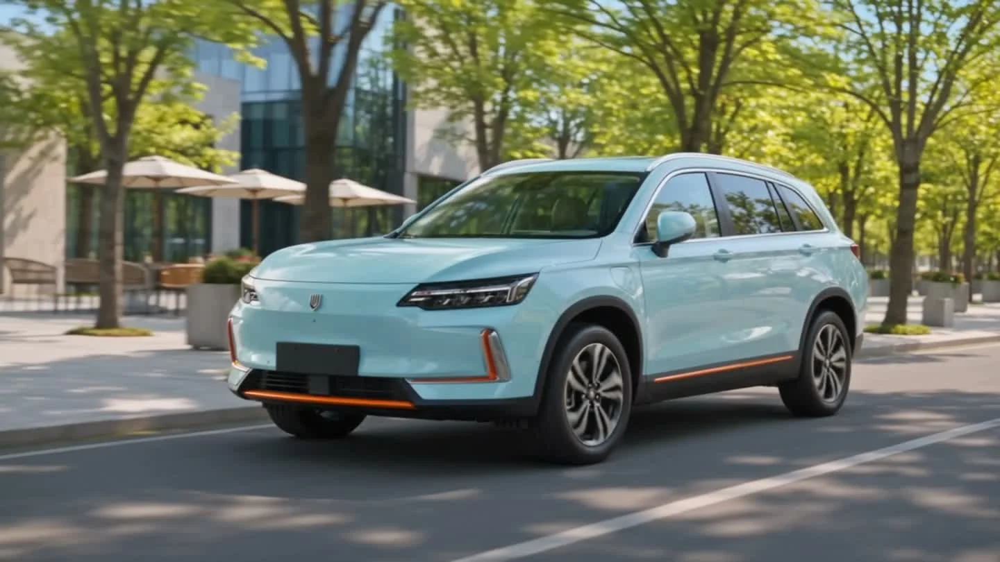

汽车
超宽画幅 / 光轨视觉 / 数字城市
从启动按钮出发，以蓝色能量线与金色光轨串联车身、城市和双车画面。

SELECTED FILMS
完整成片，保留每一种画幅。
LIGHT / CITY / MOTION
启动、唤醒、驶入城市。光线从抽象的能量脉络，逐渐成为车身轮廓与行驶轨迹，最后落到双车展示。
SPRING / EV6 / EVERYDAY
EV6 春日城市汽车广告
浅蓝车身、街边绿树与流动的光影共同构成画面。车头、轮毂与整车行驶镜头相互衔接，片尾以 EV6 字样收束。
TWO FILMS. TWO VISUAL WORLDS.
科技的速度，生活的温度。
回看作品